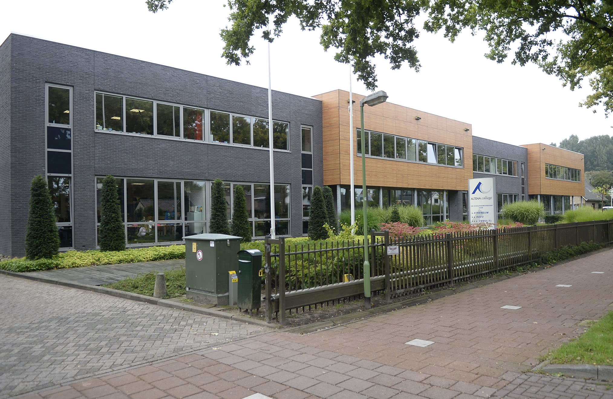

De vraag waarom ik heb gekozen voor het vak Applicatie-ontwikkelaar wordt mij regelmatig gesteld. Ik heb voor deze opleding gekozen, omdat ik werken achter een computer interessant vind en de school is dichtbij. Er bestaat een beeld dat een Applicatie-ontwikkelaar mensen helpt en dat daar het werk dan een beetje mee ophoudt. Maar er is nog zo veel meer! Vandaag vertel ik je waarom ik zo graag Applicatie-ontwikkelaar wilde worden.
Laten we beginnen bij het begin. Ik denk dat het voor velen herkenbaar zal zijn als ik vertel dat ik nooit echt wist wat ik later wilde worden. Ik vond namelijk heel veel dingen leuk. Het leek mij leuk om iets met sport te doen. Toen ik ouder werd merkte ik dat ik steeds meer interesse voor computers kreeg. Ik begon met het lezen van heel veel sites. Al snel werd duidelijk dat ik mijn keuze voor een opleiding dan ook ergens in die richting wilde zoeken.
Ik heb op het Altena College gezeten. Het was een gezellige school met ongeveer 1500 leerlingen. Ik heb veel geleerd op deze school. Bijvoorbeeld dat ik geen huiswerk moet uitstellen, want meestal als ik dat deed kwam er uiteindelijk niks van.
